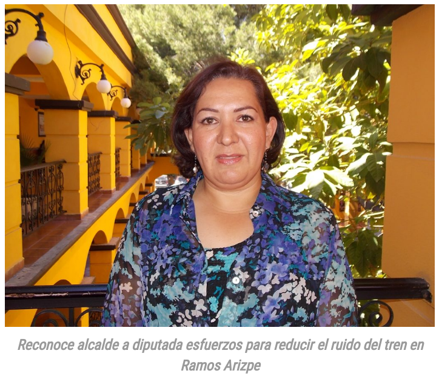

Entrevista a Lily Gutiérrez, primera diputada reelecta en 80 años

Foto tomada de El Heraldo de Saltillo
Entrevista a Lilia Isabel Gutiérrez, candidata del PRI a diputada por el distrito XII de Coahuila (reelecta).
Realizada por teléfono el 13 de junio de 2017 por Edgar Monsiváis, con el apoyo de Rodrigo Corona Galindo.
La entrevistada dio su autorización para transcribirla.
Edgar Monsiváis: ¿Para usted que representa la relección?
Lily Gutiérrez: Bueno, representa una oportunidad de darle continuidad al trabajo legislativo. Representa también regresar nuevamente a los rincones más apartados de mi distrito, que, si bien es cierto me considero que fui una diputada que sí regresó a su distrito a través de casas de gestión. Tuvimos una oficina de gestión legislativa aquí en Coahuila y otra en General Zepeda porque así se requerían en ese momento. Tratamos de hacer una agenda que nos permitiera estar en las colonias y en el campo durante los dos años que fui diputada. La relección es una gran oportunidad, pero también es un reto muy grande porque nos enfrentamos a una sociedad civil y a un electorado muy informado y muy exigente. Aquí en Coahuila la gente sí participa en política y sabe lo que se está jugando, en este caso, sabe que se estaba jugando la gubernatura, las diputaciones locales y las alcaldías. Entonces fue un proceso mucho más competitivo que 2014 pero bueno nos fue bien.
Edgar Monsiváis: ¿Considera que las reglas que se manejaron para la reelección tienen que cambiarse, perfeccionarse o les hizo falta algo? ¿Cree que existan desventajas de algunas reglas que existan, como el hecho de que tiene que pedir licencia para reelegirse cuando tiene muchos pendientes?
Lily Gutiérrez: Creo que va a llegar ese momento en el corto plazo (en el que se quite el tener que pedir licencia como requisito para reelegirse), pero hoy por hoy yo sí celebro el tema de la reelección. Me parece que es importante que las leyes se vayan adaptando a las nuevas necesidades de Coahuila. Quizá más adelante ya pueda hacerse campaña estando en funciones, pero me parece que lo que pasó ahora en el 2017 en Coahuila es el parteaguas, es el inicio de adaptar las leyes a la nueva realidad del país. Es también muy importante porque hay mayor participación de las mujeres y las mujeres tenemos que estar en la toma de decisiones desde la política, en la academia, en el tema educativo, en el sindicato, en medicina, en cualquier ámbito en el que nos desarrollemos que estemos donde se toman las decisiones. Entonces yo estoy contenta, celebro que en Coahuila haya ese código electoral donde se privilegia la participación de igualdad para participar para los cargos de elección popular entre hombres y mujeres, tanto para las alcaldías como para las diputaciones locales. Pienso que es un gran paso, que lo que no se podía hacer hace cincuenta, ochenta años porque no lo permitía la sociedad ahora sí se puede y tenemos que ir avanzando con responsabilidad y hacia mejores oportunidades y siempre en el tema de la igualdad.
Edgar Monsiváis: Sí y por ejemplo algo que mencionó ahorita, que el hecho que desde hace ochenta años no se podían relegir. ¿Ahora que salió a la calle a pedir su voto, cómo tomaron las personas el hecho de su relección? ¿Estaban informadas, o les sorprendió, qué fue lo que sintió de las personas a las que les pidió el voto?
Lily Gutiérrez: Mira, el distrito número XII era antes el distrito número V en el 2014, este distrito no sufrió modificaciones. Entonces sí era dirigirme al mismo electorado, ir a las mismas colonias, mismos ejidos y mismas congregaciones. Entonces como te comento yo, estos dos últimos años sí traté de echarme mi vuelta a las colonias y de estar en contacto con la ciudadanía. Al presentar los informes el primer año hice un documento por escrito que fui distribuyendo en los ejemplares, en las colonias, en las casas, tocando puertas. Este último del 2000 lo presenté en diciembre de 2016 ya fue un evento en donde se invitó a los militantes y simpatizantes de mi partido, PRI, a gente de la sociedad civil, sectores, organizaciones y ya pues presentamos un informe delante de la ciudadanía. Creo que esa es una forma de regresar, estando en tu distrito, en el caso particular de mi candidatura.
Previo a mi candidatura, yo en las primeras semanas que habíamos ganado las elecciones del 2014 puse dos oficinas de gestión, una en Ramos Arizpe y otra en General Zepeda. Me parece que esto me ayudó bastante, porque de alguna forma la figura del diputado es más lejana. El alcalde es la autoridad más cercana para la ciudadanía, es al que ven, es el que está al pendiente de sus temas de servicios primarios, alumbrado, de que pase la basura, el agua, es la autoridad inmediata. A veces, la ciudadanía no conoce y no tiene por qué saberlo, si es que nosotros no se lo decimos, cuál es la función del diputado. Entonces yo hice un esquema muy sencillito de discurso de no más de tres minutos en donde les decía: "Estoy aquí, vengo nuevamente a pedir el voto porque ustedes ya en una ocasión me dieron su voto de confianza, ustedes ya votaron por mí. Y yo vengo a decirles que lo que hacemos desde el congreso del estado son dos cosas básicas, o sea hacemos muchas, pero las que puedo destacar es que por un lado hacemos y modificamos las leyes que ya existen, hacemos exhortos, etc. Y por otra parte autorizamos presupuesto para el gobernador y los alcaldes, entonces si ustedes ven que el alcalde está haciendo obra, está haciendo puentes, está trabajando, poniendo luminarias, que está pavimentando, es porque su diputada se lo autorizó. Ustedes saben que yo aquí he andado, ustedes me han visto, muchos de ustedes me han recibido en sus casas, han ido a mi oficina de gestión y saben que estamos haciendo un trabajo serio. Soy muy consciente de que las mejores iniciativas son las ciudadanas, por eso siempre les pedía decir si ustedes tenían alguna idea, alguna inquietud, algún problema que me dijeran cuál era."
La gente tan generosa, nos decía cuál era el problema, pero también cuál era la solución. Entonces ya no te complicabas tanto porque sabías cuál era el problema y que necesitaban para resolverlo, muy concreto y ya es mucho más fácil hacer un exhorto y podérselo mandar a la SEP, a infraestructura, etc. Entonces la gente muy generosa, sí me escucharon, me recibieron otra vez y bueno pues yo pienso que la única forma es estar cerca de la gente. Tú sabes que la principal actividad del legislador es hacer leyes, y que hay muchos legisladores que dicen que no debemos dedicarnos a gestión, que nuestra función es hacer leyes. Yo creo que Coahuila y que México es un estado y es un país de leyes, pero que tenemos el reto de que la ciudadanía las conozca, de que sean respetadas y que la gente conozca sus derechos y obligaciones.
Edgar Monsiváis: Excelente, esto que estaba diciendo ahorita de la cercanía del partido con la ciudadanía, ahora va a tener un entorno más complejo que el que tuvo en las elecciones pasadas, porque ahora no tienen una mayoría. ¿Cuál piense que sea el reto ahora?
Lily Gutiérrez: Mira, primero, así son las democracias. La gente participa y elige quien quiere que los represente, respetando el voto ciudadano esos son los resultados que tenemos. Me da mucho gusto saber que, de los veinticinco espacios del Congreso, trece vamos a ser mujeres. Eso ya es un tema también inédito histórico, porque las mujeres votaron por las mujeres, porque históricamente o culturalmente estábamos acostumbradas a votar por hombres. Obviamente el congreso del estado tiene representación de otras fuerzas políticas y lo que tenemos que poner en la mesa es el llegar a acuerdos por el bien de Coahuila. Tenemos que sentarnos con la madurez política, sin que traigas algún pendiente personal, Coahuila está por encima de todo. Tenemos que trabajar con mucha responsabilidad y sentarnos a dialogar, el dialogo será fundamental en esta nueva legislatura, porque es en los congresos en donde están representadas las voces de todos los ciudadanos. Por ejemplo, en el caso de la relección, yo estoy muy contenta de que la gente me haya dado nuevamente su confianza y sumamente agradecida, yo ofrezco mi experiencia y mi cercanía con la gente.
Edgar Monsiváis: ¿Considera que las cuotas llegan a chocar con el tema de la relección? Porque a lo mejor un candidato quiere relegirse, pero no puede porque la ley no se lo permite debido a la cuota de género.
Lily Gutiérrez: Mira, se trata de que haya igualdad y apenas lo estamos viendo en Coahuila. Las mujeres tienen los mismos derechos y obligaciones que los varones. Te puedo decir que el PRI no batalló para postular tanto a mujeres como hombres porque es un partido de igualdad para que hombres y mujeres vayan aprendiendo y se vayan formando.
Edgar Monsiváis: Por último, viene una elección el próximo año para alcaldes, que por las reformas que se hicieron nada más durarán un año. ¿Cómo ve el tema de que la relección ahí también aplique, porque nada más estarán un año y si se vuelven a relegir, van a estar muy poco tiempo por el hecho de tener que pedir licencia?
Lily Gutiérrez: Ya se puede, es legítimo que los alcaldes y alcaldesas puedan buscar la relección, lo que te puedo decir es que los que ganaron del PRI no van a pedir licencia porque eso fue como un acuerdo del partido. Un acuerdo con mucha responsabilidad para que puedan concluir el año y ya pues entraran nuevos candidatos para disputar la siguiente contienda.xs